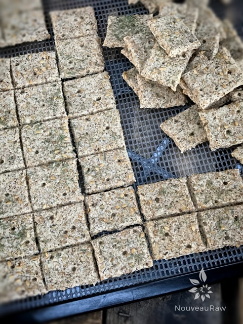

Caraway and Dill Crispy Crackers

~ raw, vegan, gluten-free ~
If you enjoy the taste of rye, this recipe is going to make you yodel from the rooftops. Is there a correlation between rye and yodeling? Not sure, but there is now.
Unfortunately, rye has gluten in it, so I used caraway to mimic the flavor. Every time I make a recipe with caraway, I marvel at just how much I enjoy this spice but then again seem to forget about it hiding away there in the cabinet. I can sit for hours, it seems, just sniffing the caraway seed and dill jars. Those smells are just so heavenly to me.
I never knew this but caraway is a member of the parsley family. It is known to help calm upset stomachs and cure flatulence. And one other bit of trivia… caraway seeds are not actually seeds, but the small ripe fruit of the caraway plant. That is your educational session for the day.
I used almond pulp as the base of this cracker. It one of my favorite ingredients to use in raw bread and cracker recipes. For crackers, it gives the texture a lighter and snapper crunch. Something that I am very fond of.
If you wish to replace the pulp with whole ground nuts or buckwheat, be aware that the flavor and texture will be different than what I came up with here.
This is a savory cracker but as you can see I did add some maple syrup to the recipe. It doesn’t create a sweet cracker, it adds a balance to all the flavors taking place. You can always omit it or replace it with 1/4 cup of water and some stevia, but very careful that you don’t add too much. Again, the idea isn’t to turn this into a sweet cracker. It’s all about flavor balancing. Have a blessed and wonderful day, amie sue
Ingredients:
- 1 1/2 cup flax seeds
- 2 Tbsp water
- 1 Tbsp cold-pressed olive
- 1/4 cup raw agave nectar or maple syrup
- 2 Tbsp fresh lemon juice
Hand mix in:
Preparation:
- Soak the flax seeds in 2 1/2 cups of water for 30+ minutes. It should be very thick.
- In the food processor fitted with the “S” blade, place the almond flour, coconut flour, dried dill, ground caraway, and salt.
- Pulse together until combined.
- Place the dry ingredients in a medium-sized bowl and set aside.
- In the same food processor place the flax seeds, water, olive oil, agave, and lemon juice. Process till everything is well incorporated. Pour into the bowl with the dry ingredients. Mix together.
- Add the almond pulp and with your hands, mix everything together really well.
- Sometimes that batter might drier than other times and this all has to do with the amount of moisture that was left in the almond pulp after hand squeezing the milk from it. If the batter seems too dry, add a few tablespoons of water to it.
- Let the dough sit for about 10 minutes +, this will give the flax time to absorb all the liquid.
- Place the dough on the teflex sheet that comes with the dehydrator or on parchment paper.
- Cover with another sheet and with a rolling pin, use even pressure to roll the crackers out.
- It should be fairly thin, no more than 1/4″ thick. The thinner the crispier.
- Sprinkle coarse sea salt, flax seeds, and dill on top before dehydrating.
- Dehydrate at 145 degrees for 1 hour then reduce to 115 (F) degrees for 6-10 hours or until dry.
- These should last several weeks in an airtight container. If they start to moisten a bit, return them to the dehydrator and dry until they firm back up.
The Institute of Culinary Ingredients™
- To learn more about maple syrup by clicking (here).
- Click (here) for my thoughts on raw agave nectar.
- What is Himalayan pink salt and does it really matter? Click (here) to read more about it.
Culinary Explanations:
- Why do I start the dehydrator at 145 degrees (F)? Click (here) to learn the reason behind this.
- When working with fresh ingredients it is important to taste test as you build a recipe. Learn why (here).
- Don’t own a dehydrator? Learn how to use your oven (here). I do however truly believe that it is a worthwhile investment. Click (here) to learn what I use.

© AmieSue.com